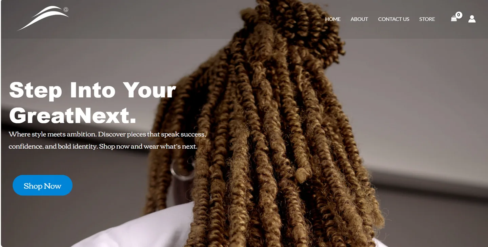
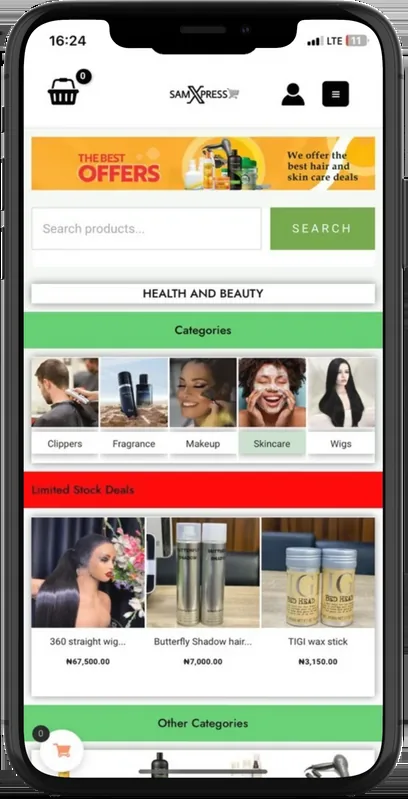
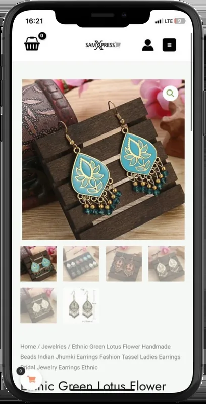
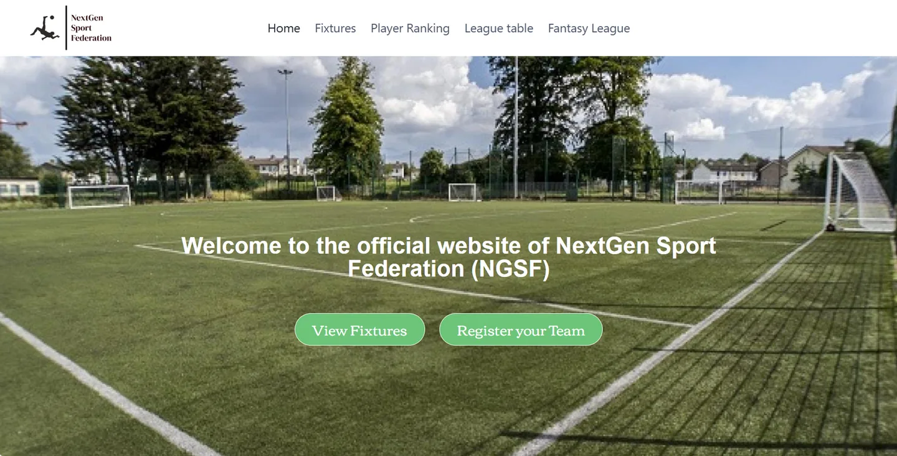
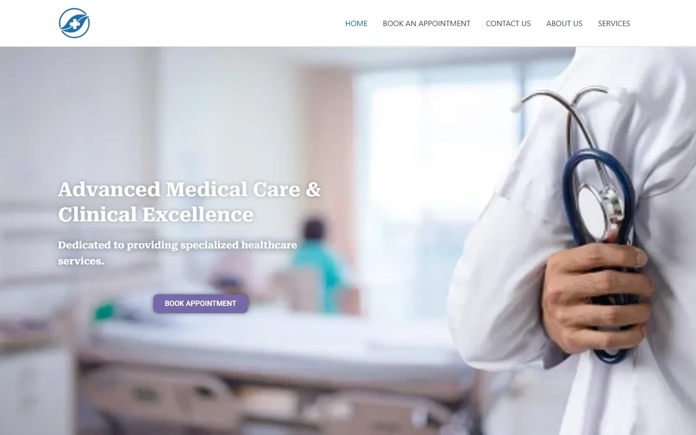

E-commerce · Clothing
GreatNext
A streetwear storefront built for the phone-first shopper. Product variants, cart, checkout, and a home page that leads with the brand.
Read the case study
Available for new projects
I’m Zakariya Samuel, a WordPress and WooCommerce developer in Nigeria. I build stores and business sites that load fast, work on every screen, and hold up after launch.
Zakariya Samuel
Selected clients
Five builds, from a streetwear storefront to a hospital with its own EMR portal. Each one built for a real client, not a mockup.
E-commerce · Clothing
A streetwear storefront built for the phone-first shopper. Product variants, cart, checkout, and a home page that leads with the brand.
Read the case study
Fintech · Investment
An investment platform that explains plans, maturity dates and returns without losing the user in jargon.
Read the case studyMarketplace · E-commerce
A multi-vendor marketplace where sellers manage their own catalogues and shoppers check out across stores.
Read the case study

Sports · Publishing
Fixtures, league tables and top-scorer stats for a federation running two active leagues, updated by the admin team.
Read the case study
Healthcare · Hospital
Appointments, contact and a secure EMR portal for a specialist hospital — one brand for patients and staff.
Read the case study
Most projects start with one of these. If yours does not fit, tell me what you need and I will say whether I can help.
New sites and rebuilds for businesses that need to look credible and update their own content.
Sell physical or digital products with a checkout that does not lose people at the last step.
Slow sites, broken layouts, plugin conflicts, failed migrations. I find the cause and fix it.
Keep the site healthy after launch so you are not the one doing updates at midnight.
A short, predictable process. You always know what is happening and what comes next.
Step one
A short call and a written scope: pages, products, integrations, budget and timeline. No surprises later.
Step two
I build on a staging site and send you a link every week. You comment, I adjust. No black box.
Step three
DNS, SSL, payments, forms, analytics and redirects. I test on real phones before it goes live.
Step four
Thirty days of fixes after launch, then an optional care plan if you want me to keep it running.
I’m Zakariya Samuel, a WordPress developer based in Nigeria. I have built a clothing store, a multi-vendor marketplace, an investment platform and a football federation site.
Different briefs, same job: make the thing work for the people using it. That means a checkout a first-time buyer understands, a league table an admin can update, and a homepage that loads before someone gives up.
I work directly with founders and small teams. You get clear updates, a staging link you can click, and a site you can edit yourself after handover.
Tools I use
Working with me means direct communication, a fixed scope, and a proper handover — not a login you never see again.
Tell me what you are working on. I usually reply within one working day.